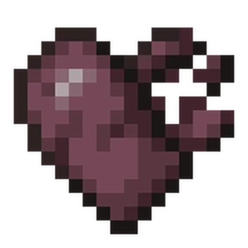
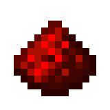

Wither
Visibilidad
Cambia el color de los corazones cuando tienes el efecto wither, para identificarlo de un vistazo sin mirar la barra de efectos.
 SSP 1.20
-gonver
SSP 1.20
-gonver
Sección 03
Los packs que llevo puestos en la serie.
Yo uso los de Modrinth: Aviso por que hay cambios minimos.

Visibilidad
Cambia el color de los corazones cuando tienes el efecto wither, para identificarlo de un vistazo sin mirar la barra de efectos.

Visibilidad
Aclara los componentes de redstone y hace evidente cuándo están activados. Trabajar con circuitos se vuelve mucho más cómodo.
 Modrinth
Modrinth